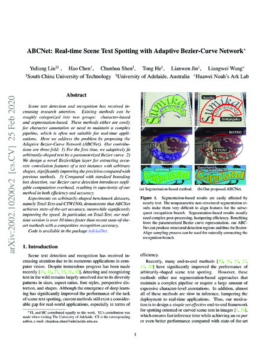
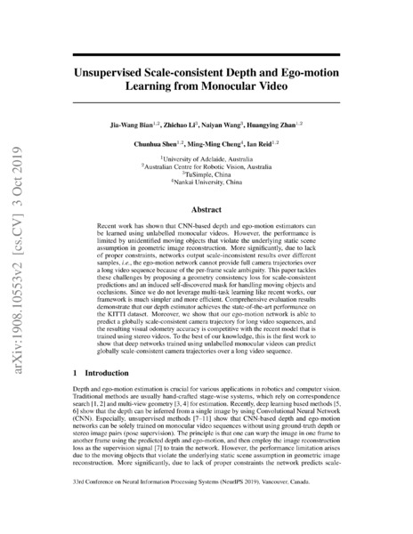
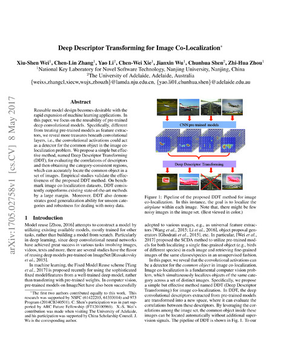
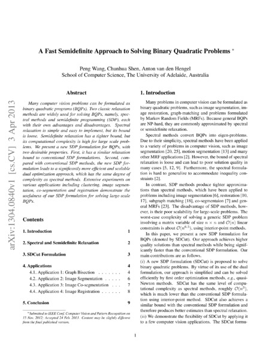
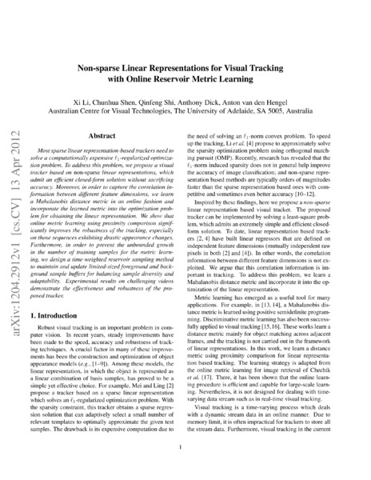

Google scholar (25724 citations) , DBLP , arXiv .
Journal
 Exploring the capacity of an orderless box discretization network for multi-orientation scene text detection
Exploring the capacity of an orderless box discretization network for multi-orientation scene text detection
Y. Liu, T. He, H. Chen, X. Wang, C. Luo, S. Zhang, C. Shen, L. Jin.
International Journal of Computer Vision (IJCV), 2021.
arXivbibtexsearchproject webpageLearning deep part-aware embedding for person retrieval
Y. Zhao, C. Shen, X. Yu, H. Chen, Y. Gao, S. Xiong.
Pattern Recognition (PR), 2021.
bibtexsearchAn adversarial human pose estimation network injected with graph structure
L. Tian, P. Wang, G. Liang, C. Shen.
Pattern Recognition (PR), 2021.
bibtexsearchDeep learning for anomaly detection: a review
G. Pang, C. Shen, L. Cao, A. van den Hengel.
ACM Computing Surveys (ACMSurvey), 2020.
arXivbibtexsearchTowards light-weight portrait matting via parameter sharing
Y. Dai, H. Lu, C. Shen.
Computer Graphics Forum (CGF), 2020.
bibtexsearchSeparating content from style using adversarial learning for recognizing text in the wild
C. Luo, Q. Lin, Y. Liu, L. Jin, C. Shen.
International Journal of Computer Vision (IJCV), 2020.
arXivbibtexsearchTasselNetv2: in-field counting of wheat spikes with context-augmented local regression networks
H. Xiong, Z. Cao, H. Lu, S. Madec, L. Liu, C. Shen.
Plant Methods (PLME), 2020.
bibtexsearch MobileFAN: transferring deep hidden representation for face alignment
MobileFAN: transferring deep hidden representation for face alignment
Y. Zhao, Y. Liu, C. Shen, Y. Gao, S. Xiong.
Pattern Recognition (PR), 2020.
arXivbibtexsearch Part-guided attention learning for vehicle instance retrieval
Part-guided attention learning for vehicle instance retrieval
X. Zhang, R. Zhang, J. Cao, D. Gong, M. You, C. Shen.
IEEE Transactions on Intelligent Transportation Systems (T-ITS), 2020.
arXivbibtexsearchA robust attentional framework for license plate recognition in the wild
L. Zhang, P. Wang, H. Li, Z. Li, C. Shen, Y. Zhang.
IEEE Transactions on Intelligent Transportation Systems (T-ITS), 2020.
bibtexsearchReal-time high-performance semantic image segmentation of urban street scenes
G. Dong, Y. Yan, C. Shen, H. Wang.
IEEE Transactions on Intelligent Transportation Systems (T-ITS), 2020.
bibtexsearchTowards effective deep embedding for zero-shot learning
L. Zhang, P. Wang, L. Liu, C. Shen, W. Wei, Y. Zhang, A. van den Hengel.
IEEE Transactions on Circuits and Systems for Video Technology (TCSVT), 2020.
bibtexsearchNSSNet: scale-aware object counting with non-scale suppression
L. Liu, Z. Cao, H. Lu, H. Xiong, C. Shen.
IEEE Transactions on Circuits and Systems for Video Technology (TCSVT), 2020.
bibtexsearchViral pneumonia screening on chest x-ray images using confidence-aware anomaly detection
J. Zhang, Y. Xie, Z. Liao, G. Pang, J. Verjans, W. Li, Z. Sun, J. He, Y. Li, C. Shen, Y. Xia.
IEEE Transactions on Medical Imaging (TMI), 2020.
arXivbibtexsearch A mutual bootstrapping model for automated skin lesion segmentation and classification
A mutual bootstrapping model for automated skin lesion segmentation and classification
Y. Xie, J. Zhang, Y. Xia, C. Shen.
IEEE Transactions on Medical Imaging (TMI), 2020.
arXivbibtexsearchSESV: accurate medical image segmentation by predicting and correcting errors
Y. Xie, J. Zhang, H. Lu, C. Shen, Y. Xia.
IEEE Transactions on Medical Imaging (TMI), 2020.
bibtexsearchOPMP: an omni-directional pyramid mask proposal network for arbitrary-shape scene text detection
S. Zhang, Y. Liu, L. Jin, Z. Wei, C. Shen.
IEEE Transactions on Multimedia (TMM), 2020.
bibtexsearchJoint deep learning of facial expression synthesis and recognition
Y. Yan, Y. Huang, S. Chen, C. Shen, H. Wang.
IEEE Transactions on Multimedia (TMM), 2020.
bibtexsearchAccurate tensor completion via adaptive low-rank representation
L. Zhang, W. Wei, Q. Shi, C. Shen, A. van den Hengel, Y. Zhang.
IEEE Transactions on Neural Networks and Learning Systems (TNN), 2020.
bibtexsearchDeep clustering with sample-assignment invariance prior
X. Peng, H. Zhu, J. Feng, C. Shen, H. Zhang, J. Zhou.
IEEE Transactions on Neural Networks and Learning Systems (TNN), 2020.
bibtexsearch Learning deep gradient descent optimization for image deconvolution
Learning deep gradient descent optimization for image deconvolution
D. Gong, Z. Zhang, Q. Shi, A. van den Hengel, C. Shen, Y. Zhang.
IEEE Transactions on Neural Networks and Learning Systems (TNN), 2020.
arXivbibtexsearch Real-time image smoothing via iterative least squares
Real-time image smoothing via iterative least squares
W. Liu, P. Zhang, X. Huang, J. Yang, C. Shen, I. Reid.
ACM Transactions on Graphics (TOG), 2020.
arXivlinkbibtexsearchproject webpagePlenty is plague: fine-grained learning for visual question answering
Y. Zhou, R. Ji, J. Su, X. Sun, D. Meng, Y. Gao, C. Shen.
IEEE Transactions on Pattern Analysis and Machine Intelligence (TPAMI), 2020.
linkbibtexsearch Ordered or orderless: a revisit for video based person re-identification
Ordered or orderless: a revisit for video based person re-identification
L. Zhang, Z. Shi, J. Zhou, M. Cheng, Y. Liu, J. Bian, Z. Zeng, C. Shen.
IEEE Transactions on Pattern Analysis and Machine Intelligence (TPAMI), 2020.
arXivlinkbibtexsearchproject webpageIndex networks
H. Lu, Y. Dai, C. Shen, S. Xu.
IEEE Transactions on Pattern Analysis and Machine Intelligence (TPAMI), 2020.
arXivlinkbibtexsearchproject webpageStructured knowledge distillation for dense prediction
Y. Liu, C. Shun, J. Wang, C. Shen.
IEEE Transactions on Pattern Analysis and Machine Intelligence (TPAMI), 2020.
arXivlinkbibtexsearchproject webpageAdversarial learning of structure-aware fully convolutional networks for landmark localization
Y. Chen, C. Shen, H. Chen, X. Wei, L. Liu, J. Yang.
IEEE Transactions on Pattern Analysis and Machine Intelligence (TPAMI), 2020.
arXivlinkbibtexsearch Improving generative adversarial networks with local coordinate coding
Improving generative adversarial networks with local coordinate coding
J. Cao, Y. Guo, Q. Wu, C. Shen, J. Huang, M. Tan.
IEEE Transactions on Pattern Analysis and Machine Intelligence (TPAMI), 2020.
arXivbibtexsearchproject webpage Adaptive importance learning for improving lightweight image super-resolution network
Adaptive importance learning for improving lightweight image super-resolution network
L. Zhang, P. Wang, C. Shen, L. Liu, W. Wei, Y. Zhang, A. van den Hengel.
International Journal of Computer Vision (IJCV), 2019.
arXivbibtexsearchproject webpageAccurate imagery recovery using a multi-observation patch model
L. Zhang, W. Wei, Q. Shen, C. Shen, A. van den Hengel.
Information Sciences (IS), 2019.
bibtexsearchHeritage image annotation via collective knowledge
J. Zhang, Q. Wu, J. Zhang, C. Shen, J. Lu, Q. Wu.
Pattern Recognition (PR), 2019.
bibtexsearchWider or deeper: revisiting the ResNet model for visual recognition
Z. Wu, C. Shen, A. van den Hengel.
Pattern Recognition (PR), 2019.
arXivbibtexsearchOrder-aware convolutional pooling for video based action recognition
P. Wang, L. Liu, C. Shen, H. Shen.
Pattern Recognition (PR), 2019.
bibtexsearchStructural analysis of attributes for vehicle re-identification and retrieval
Y. Zhao, C. Shen, H. Wang, S. Chen.
IEEE Transactions on Intelligent Transportation Systems (T-ITS), 2019.
bibtexsearchHuman detection aided by deeply learned semantic masks
X. Wang, C. Shen, H. Li, S. Xu.
IEEE Transactions on Circuits and Systems for Video Technology (TCSVT), 2019.
bibtexsearchEmbedding bilateral filter in least squares for efficient edge-preserving image smoothing
W. Liu, P. Zhang, X. Chen, C. Shen, X. Huang, J. Yang.
IEEE Transactions on Circuits and Systems for Video Technology (TCSVT), 2019.
bibtexsearchCounting objects by blockwise classification
L. Liu, H. Lu, H. Xiong, K. Xian, Z. Cao, C. Shen.
IEEE Transactions on Circuits and Systems for Video Technology (TCSVT), 2019.
bibtexsearchHyperspectral classification based on lightweight 3D-CNN with transfer learning
H. Zhang, Y. Li, Y. Jiang, P. Wang, Q. Shen, C. Shen.
IEEE Transactions on Geoscience and Remote Sensing (TGRS), 2019.
bibtexsearchSalient object detection with lossless feature reflection and weighted structural loss
P. Zhang, W. Liu, H. Lu, C. Shen.
IEEE Transactions on Image Processing (TIP), 2019.
bibtexsearchPiecewise classifier mappings: learning fine-grained learners for novel categories with few examples
X. Wei, P. Wang, L. Liu, C. Shen, J. Wu.
IEEE Transactions on Image Processing (TIP), 2019.
arXivbibtexsearchMultiple instance learning with emerging novel class
X. Wei, H. Ye, X. Mu, J. Wu, C. Shen, Z. Zhou.
IEEE Transactions on Knowledge and Data Engineering (TKDE), 2019.
bibtexsearchAttention residual learning for skin lesion classification
J. Zhang, Y. Xie, Y. Xia, C. Shen.
IEEE Transactions on Medical Imaging (TMI), 2019.
bibtexsearch Decoupled spatial neural attention for weakly supervised semantic segmentation
Decoupled spatial neural attention for weakly supervised semantic segmentation
T. Zhang, G. Lin, J. Cai, T. Shen, C. Shen, A. Kot.
IEEE Transactions on Multimedia (TMM), 2019.
arXivbibtexsearchRefineNet: multi-path refinement networks for dense prediction
G. Lin, F. Liu, A. Milan, C. Shen, I. Reid.
IEEE Transactions on Pattern Analysis and Machine Intelligence (TPAMI), 2019.
linkbibtexsearchproject webpagePytorch code is here.
Cluster sparsity field: an internal hyperspectral imagery prior for reconstruction
L. Zhang, W. Wei, Y. Zhang, C. Shen, A. van den Hengel, Q. Shi.
International Journal of Computer Vision (IJCV), 2018.
pdfbibtexsearchReading car license plates using deep neural networks
H. Li, P. Wang, M. You, C. Shen.
Image and Vision Computing (IVC), 2018.
arXivbibtexsearch Multi-label learning based deep transfer neural network for facial attribute classification
Multi-label learning based deep transfer neural network for facial attribute classification
N. Zhuang, Y. Yan, S. Chen, H. Wang, C. Shen.
Pattern Recognition (PR), 2018.
arXivbibtexsearch Unsupervised object discovery and co-localization by deep descriptor transforming
Unsupervised object discovery and co-localization by deep descriptor transforming
X. Wei, C. Zhang, J. Wu, C. Shen, Z. Zhou.
Pattern Recognition (PR), 2018.
arXivbibtexsearchAn extended filtered channel framework for pedestrian detection
M. You, Y. Zhang, C. Shen, X. Zhang.
IEEE Transactions on Intelligent Transportation Systems (T-ITS), 2018.
bibtexsearchTowards end-to-end car license plates detection and recognition with deep neural networks
H. Li, P. Wang, C. Shen.
IEEE Transactions on Intelligent Transportation Systems (T-ITS), 2018.
bibtexsearchUnsupervised domain adaptation using robust class-wise matching
L. Zhang, P. Wang, W. Wei, H. Lu, C. Shen, A. van den Hengel, Y. Zhang.
IEEE Transactions on Circuits and Systems for Video Technology (TCSVT), 2018.
bibtexsearchSemantics-aware visual object tracking
R. Yao, G. Lin, C. Shen, Y. Zhang, Q. Shi.
IEEE Transactions on Circuits and Systems for Video Technology (TCSVT), 2018.
bibtexsearch Pushing the limits of deep CNNs for pedestrian detection
Pushing the limits of deep CNNs for pedestrian detection
Q. Hu, P. Wang, C. Shen, A. van den Hengel, F. Porikli.
IEEE Transactions on Circuits and Systems for Video Technology (TCSVT), 2018.
arXivbibtexsearchAn embarrassingly simple approach to visual domain adaptation
H. Lu, C. Shen, Z. Cao, Y. Xiao, A. van den Hengel.
IEEE Transactions on Image Processing (TIP), 2018.
bibtexsearchproject webpage Multi-label image classification with regional latent semantic dependencies
Multi-label image classification with regional latent semantic dependencies
J. Zhang, Q. Wu, C. Shen, J. Zhang, J. Lu.
IEEE Transactions on Multimedia (TMM), 2018.
arXivbibtexsearchAutomatic image cropping for visual aesthetic enhancement using deep neural networks and cascaded regression
G. Guo, H. Wang, C. Shen, Y. Yan, H. Liao.
IEEE Transactions on Multimedia (TMM), 2018.
arXivbibtexsearchFVQA: fact-based visual question answering
P. Wang, Q. Wu, C. Shen, A. Dick, A. van den Hengel.
IEEE Transactions on Pattern Analysis and Machine Intelligence (TPAMI), 2018.
arXivbibtexsearchOrdinal constraint binary coding for approximate nearest neighbor search
H. Liu, R. Ji, J. Wang, C. Shen.
IEEE Transactions on Pattern Analysis and Machine Intelligence (TPAMI), 2018.
pdfbibtexsearch Structured learning of binary codes with column generation for optimizing ranking measures
Structured learning of binary codes with column generation for optimizing ranking measures
G. Lin, F. Liu, C. Shen, J. Wu, H. Shen.
International Journal of Computer Vision (IJCV), 2017.
arXivbibtexsearchproject webpageRemoval of optically thick clouds from high-resolution satellite imagery using dictionary group learning and interdictionary nonlocal joint sparse coding
Y. Li, W. Li, C. Shen.
IEEE Journal of Selected Topics in Applied Earth Observations and Remote Sensing (JSTAEORS), 2017.
bibtexsearchTasselNet: counting maize tassels in the wild via local counts regression network
H. Lu, Z. Cao, Y. Xiao, B. Zhuang, C. Shen.
Plant Methods (PLME), 2017.
arXivbibtexsearch Deep linear discriminant analysis on Fisher networks: a hybrid architecture for person re-identification
Deep linear discriminant analysis on Fisher networks: a hybrid architecture for person re-identification
L. Wu, C. Shen, A. van den Hengel.
Pattern Recognition (PR), 2017.
arXivbibtexsearchMask-CNN: localizing parts and selecting descriptors for bird species categorization
X. Wei, C. Xie, J. Wu, C. Shen.
Pattern Recognition (PR), 2017.
bibtexsearch Learning discriminative trajectorylet detector sets for accurate skeleton-based action recognition
Learning discriminative trajectorylet detector sets for accurate skeleton-based action recognition
R. Qiao, L. Liu, C. Shen, A. van den Hengel.
Pattern Recognition (PR), 2017.
arXivbibtexsearchDeep CNNs with spatially weighted pooling for fine-grained car recognition
Q. Hu, H. Wang, T. Li, C. Shen.
IEEE Transactions on Intelligent Transportation Systems (T-ITS), 2017.
bibtexsearch Crowd counting via weighted VLAD on dense attribute feature maps
Crowd counting via weighted VLAD on dense attribute feature maps
B. Sheng, C. Shen, G. Lin, J. Li, W. Yang, C. Sun.
IEEE Transactions on Circuits and Systems for Video Technology (TCSVT), 2017.
arXivbibtexsearch Estimating depth from monocular images as classification using deep fully convolutional residual networks
Estimating depth from monocular images as classification using deep fully convolutional residual networks
Y. Cao, Z. Wu, C. Shen.
IEEE Transactions on Circuits and Systems for Video Technology (TCSVT), 2017.
arXivbibtexsearchDiscriminative training of deep fully-connected continuous CRF with task-specific loss
F. Liu, G. Lin, C. Shen.
IEEE Transactions on Image Processing (TIP), 2017.
arXivbibtexsearch Exploiting depth from single monocular images for object detection and semantic segmentation
Exploiting depth from single monocular images for object detection and semantic segmentation
Y. Cao, C. Shen, H. Shen.
IEEE Transactions on Image Processing (TIP), 2017.
arXivbibtexsearch Structured learning of tree potentials in CRF for image segmentation
Structured learning of tree potentials in CRF for image segmentation
F. Liu, G. Lin, R. Qiao, C. Shen.
IEEE Transactions on Neural Networks and Learning Systems (TNN), 2017.
arXivbibtexsearch Image captioning and visual question answering based on attributes and external knowledge
Image captioning and visual question answering based on attributes and external knowledge
Q. Wu, C. Shen, P. Wang, A. Dick, A. van den Hengel.
IEEE Transactions on Pattern Analysis and Machine Intelligence (TPAMI), 2017.
arXivbibtexsearch Compositional model based Fisher vector coding for image classification
Compositional model based Fisher vector coding for image classification
L. Liu, P. Wang, C. Shen, L. Wang, A. van den Hengel, C. Wang, H. Shen.
IEEE Transactions on Pattern Analysis and Machine Intelligence (TPAMI), 2017.
arXivbibtexsearch Cross-convolutional-layer pooling for image recognition
Cross-convolutional-layer pooling for image recognition
L. Liu, C. Shen, A. van den Hengel.
IEEE Transactions on Pattern Analysis and Machine Intelligence (TPAMI), 2017.
arXivlinkbibtexsearchExploring context with deep structured models for semantic segmentation
G. Lin, C. Shen, A. van den Hengel, I. Reid.
IEEE Transactions on Pattern Analysis and Machine Intelligence (TPAMI), 2017.
arXivbibtexsearch Structured learning of metric ensembles with application to person re-identification
Structured learning of metric ensembles with application to person re-identification
S. Paisitkriangkrai, L. Wu, C. Shen, A. van den Hengel.
Computer Vision and Image Understanding (CVIU), 2016.
arXivbibtexsearch Unsupervised feature learning for dense correspondences across scenes
Unsupervised feature learning for dense correspondences across scenes
C. Zhang, C. Shen, T. Shen.
International Journal of Computer Vision (IJCV), 2016.
arXivbibtexsearchproject webpageEfficient semidefinite branch-and-cut for MAP-MRF inference
P. Wang, C. Shen, A. van den Hengel, P. Torr.
International Journal of Computer Vision (IJCV), 2016.
arXivlinkbibtexsearch Mining mid-level visual patterns with deep CNN activations
Mining mid-level visual patterns with deep CNN activations
Y. Li, L. Liu, C. Shen, A. van den Hengel.
International Journal of Computer Vision (IJCV), 2016.
arXivlinkbibtexsearchproject webpageOnline unsupervised feature learning for visual tracking
F. Liu, C. Shen, I. Reid, A. van den Hengel.
Image and Vision Computing (IVC), 2016.
arXivbibtexsearchCanonical principal angles correlation analysis for two-view data
S. Wang, J. Lu, X. Gu, C. Shen, R. Xia, J. Yang.
Journal of Visual Communication and Image Representation (JVCIR), 2016.
linkbibtexsearch Face image classification by pooling raw features
Face image classification by pooling raw features
F. Shen, C. Shen, X. Zhou, Y. Yang, H. Shen.
Pattern Recognition (PR), 2016.
arXivbibtexsearchproject webpage Face recognition using linear representation ensembles
Face recognition using linear representation ensembles
H. Li, F. Shen, C. Shen, Y. Yang, Y. Gao.
Pattern Recognition (PR), 2016.
arXivlinkbibtexsearchFast detection of multiple objects in traffic scenes with a common detection framework
Q. Hu, S. Paisitkriangkrai, C. Shen, A. van den Hengel, F. Porikli.
IEEE Transactions on Intelligent Transportation Systems (T-ITS), 2016.
bibtexsearchPart-based robust tracking using online latent structured learning
R. Yao, Q. Shi, C. Shen, Y. Zhang, A. van den Hengel.
IEEE Transactions on Circuits and Systems for Video Technology (TCSVT), 2016.
linkbibtexsearch Temporal pyramid pooling based convolutional neural network for action recognition
Temporal pyramid pooling based convolutional neural network for action recognition
P. Wang, Y. Cao, C. Shen, L. Liu, H. Shen.
IEEE Transactions on Circuits and Systems for Video Technology (TCSVT), 2016.
arXivbibtexsearchDictionary learning for promoting structured sparsity in hyerpsectral compressive sensing
L. Zhang, W. Wei, Y. Zhang, C. Shen, A. van den Hengel, Q. Shi.
IEEE Transactions on Geoscience and Remote Sensing (TGRS), 2016.
bibtexsearchScalable linear visual feature learning via online parallel nonnegative matrix factorization
X. Zhao, X. Li, Z. Zhang, C. Shen, L. Gao, X. Li.
IEEE Transactions on Neural Networks and Learning Systems (TNN), 2016.
linkbibtexsearchLarge-scale binary quadratic optimization using semidefinite relaxation and applications
P. Wang, C. Shen, A. van den Hengel, P. Torr.
IEEE Transactions on Pattern Analysis and Machine Intelligence (TPAMI), 2016.
arXivlinkbibtexsearch Pedestrian detection with spatially pooled features and structured ensemble learning
Pedestrian detection with spatially pooled features and structured ensemble learning
S. Paisitkriangkrai, C. Shen, A. van den Hengel.
IEEE Transactions on Pattern Analysis and Machine Intelligence (TPAMI), 2016.
arXivlinkbibtexsearchproject webpageA generalized probabilistic framework for compact codebook creation
L. Liu, L. Wang, C. Shen.
IEEE Transactions on Pattern Analysis and Machine Intelligence (TPAMI), 2016.
arXivlinkbibtexsearchLearning depth from single monocular images using deep convolutional neural fields
F. Liu, C. Shen, G. Lin, I. Reid.
IEEE Transactions on Pattern Analysis and Machine Intelligence (TPAMI), 2016.
arXivlinkbibtexsearchproject webpage Online metric-weighted linear representations for robust visual tracking
Online metric-weighted linear representations for robust visual tracking
X. Li, C. Shen, A. Dick, Z. Zhang, Y. Zhuang.
IEEE Transactions on Pattern Analysis and Machine Intelligence (TPAMI), 2016.
arXivbibtexsearch Extrinsic methods for coding and dictionary learning on Grassmann manifolds
Extrinsic methods for coding and dictionary learning on Grassmann manifolds
M. Harandi, R. Hartley, C. Shen, B. Lovell, C. Sanderson.
International Journal of Computer Vision (IJCV), 2015.
arXivbibtexsearchproject webpageCRF learning with CNN features for image segmentation
F. Liu, G. Lin, C. Shen.
Pattern Recognition (PR), 2015.
arXivbibtexsearchHashing on nonlinear manifolds
F. Shen, C. Shen, Q. Shi, A. van den Hengel, Z. Tang, H. Shen.
IEEE Transactions on Image Processing (TIP), 2015.
arXivbibtexsearchproject webpageA computational model of the short-cut rule for 2D shape decomposition
L. Luo, C. Shen, X. Liu, C. Zhang.
IEEE Transactions on Image Processing (TIP), 2015.
arXivbibtexsearch Worst-case linear discriminant analysis as scalable semidefinite feasibility problems
Worst-case linear discriminant analysis as scalable semidefinite feasibility problems
H. Li, C. Shen, A. van den Hengel, Q. Shi.
IEEE Transactions on Image Processing (TIP), 2015.
arXivbibtexsearchproject webpageSupervised hashing using graph cuts and boosted decision trees
G. Lin, C. Shen, A. van den Hengel.
IEEE Transactions on Pattern Analysis and Machine Intelligence (TPAMI), 2015.
arXivlinkbibtexsearchproject webpage Fast approximate minimization: Speeding up robust regression
Fast approximate minimization: Speeding up robust regression
F. Shen, C. Shen, R. Hill, A. van den Hengel, Z. Tang.
Computational Statistics and Data Analysis (CSDA), 2014.
arXivbibtexsearch Multiple kernel learning in the primal for multi-modal Alzheimer's disease classification
Multiple kernel learning in the primal for multi-modal Alzheimer's disease classification
F. Liu, L. Zhou, C. Shen, J. Yin.
IEEE Journal of Biomedical and Health Informatics (JBHI), 2014.
arXivlinkbibtexsearchOnline published at IEEE: 10 October 2013.
Multiple kernel clustering based on centered kernel alignment
Y. Lu, L. Wang, J. Lu, J. Yang, C. Shen.
Pattern Recognition (PR), 2014.
bibtexsearch Efficient semidefinite spectral clustering via Lagrange duality
Efficient semidefinite spectral clustering via Lagrange duality
Y. Yan, C. Shen, H. Wang.
IEEE Transactions on Image Processing (TIP), 2014.
arXivbibtexsearchLarge-margin learning of compact binary image encodings
S. Paisitkriangkrai, C. Shen, A. van den Hengel.
IEEE Transactions on Image Processing (TIP), 2014.
arXivbibtexsearch Characterness: An indicator of text in the wild
Characterness: An indicator of text in the wild
Y. Li, W. Jia, C. Shen, A. van den Hengel.
IEEE Transactions on Image Processing (TIP), 2014.
arXivlinkbibtexsearchproject webpageContext-aware hypergraph construction for robust spectral clustering
X. Li, W. Hu, C. Shen, A. Dick, Z. Zhang.
IEEE Transactions on Knowledge and Data Engineering (TKDE), 2014.
arXivlinkbibtexsearch Asymmetric pruning for learning cascade detectors
Asymmetric pruning for learning cascade detectors
S. Paisitkriangkrai, C. Shen, A. van den Hengel.
IEEE Transactions on Multimedia (TMM), 2014.
arXivlinkbibtexsearchEfficient dual approach to distance metric learning
C. Shen, J. Kim, F. Liu, L. Wang, A. van den Hengel.
IEEE Transactions on Neural Networks and Learning Systems (TNN), 2014.
arXivbibtexsearch A scalable stage-wise approach to large-margin multi-class loss based boosting
A scalable stage-wise approach to large-margin multi-class loss based boosting
S. Paisitkriangkrai, C. Shen, A. van den Hengel.
IEEE Transactions on Neural Networks and Learning Systems (TNN), 2014.
arXivlinkpdfbibtexsearch RandomBoost: Simplified multi-class boosting through randomization
RandomBoost: Simplified multi-class boosting through randomization
S. Paisitkriangkrai, C. Shen, Q. Shi, A. van den Hengel.
IEEE Transactions on Neural Networks and Learning Systems (TNN), 2014.
arXivlinkbibtexsearchA hierarchical word-merging algorithm with class separability measure
L. Wang, L. Zhou, C. Shen, L. Liu, H. Liu.
IEEE Transactions on Pattern Analysis and Machine Intelligence (TPAMI), 2014.
pdfbibtexsearch StructBoost: Boosting methods for predicting structured output variables
StructBoost: Boosting methods for predicting structured output variables
C. Shen, G. Lin, A. van den Hengel.
IEEE Transactions on Pattern Analysis and Machine Intelligence (TPAMI), 2014.
arXivlinkpdfbibtexsearchTraining effective node classifiers for cascade classification
C. Shen, P. Wang, S. Paisitkriangkrai, A. van den Hengel.
International Journal of Computer Vision (IJCV), 2013.
arXivlinkbibtexsearchFully corrective boosting with arbitrary loss and regularization
C. Shen, H. Li, A. van den Hengel.
Neural Networks (NN), 2013.
pdfbibtexsearchApproximate least trimmed sum of squares fitting and applications in image analysis
F. Shen, C. Shen, A. van den Hengel, Z. Tang.
IEEE Transactions on Image Processing (TIP), 2013.
linkpdfbibtexsearchVisual tracking with spatio-temporal Dempster-Shafer information fusion
X. Li, A. Dick, C. Shen, Z. Zhang, A. van den Hengel, H. Wang.
IEEE Transactions on Image Processing (TIP), 2013.
pdfbibtexsearch A survey of appearance models in visual object tracking
A survey of appearance models in visual object tracking
X. Li, W. Hu, C. Shen, Z. Zhang, A. Dick, A. van den Hengel.
ACM Transactions on Intelligent Systems and Technology (TIST), 2013.
arXivbibtexsearchShape similarity analysis by self-tuning locally constrained mixed-diffusion
L. Luo, C. Shen, C. Zhang, A. van den Hengel.
IEEE Transactions on Multimedia (TMM), 2013.
pdfbibtexsearch Incremental learning of 3D-DCT compact representations for robust visual tracking
Incremental learning of 3D-DCT compact representations for robust visual tracking
X. Li, A. Dick, C. Shen, A. van den Hengel, H. Wang.
IEEE Transactions on Pattern Analysis and Machine Intelligence (TPAMI), 2013.
arXivlinkpdfbibtexsearchproject webpage Positive semidefinite metric learning using boosting-like algorithms
Positive semidefinite metric learning using boosting-like algorithms
C. Shen, J. Kim, L. Wang, A. van den Hengel.
Journal of Machine Learning Research (JMLR), 2012.
arXivlinkbibtexsearchproject webpageFast and robust object detection using asymmetric totally-corrective boosting
P. Wang, C. Shen, N. Barnes, H. Zheng.
IEEE Transactions on Neural Networks and Learning Systems (TNN), 2012.
pdfbibtexsearchUBoost: Boosting with the Universum
C. Shen, P. Wang, F. Shen, H. Wang.
IEEE Transactions on Pattern Analysis and Machine Intelligence (TPAMI), 2012.
pdfbibtexsearch Efficiently learning a detection cascade with sparse eigenvectors
Efficiently learning a detection cascade with sparse eigenvectors
C. Shen, S. Paisitkriangkrai, J. Zhang.
IEEE Transactions on Image Processing (TIP), 2011.
arXivlinkbibtexsearchIncremental training of a detector using online sparse eigen-decomposition
S. Paisitkriangkrai, C. Shen, J. Zhang.
IEEE Transactions on Image Processing (TIP), 2011.
arXivlinkbibtexsearch Interactive color image segmentation with linear programming
Interactive color image segmentation with linear programming
H. Li, C. Shen.
Machine Vision and Applications (MVA), 2010.
linkpdfbibtexsearch Generalized kernel-based visual tracking
Generalized kernel-based visual tracking
C. Shen, J. Kim, H. Wang.
IEEE Transactions on Circuits and Systems for Video Technology (TCSVT), 2010.
arXivlinkpdfbibtexsearchproject webpageFeature selection with redundancy-constrained class separability
L. Zhou, L. Wang, C. Shen.
IEEE Transactions on Neural Networks (TNN), 2010.
linkbibtexsearch Boosting through optimization of margin distributions
Boosting through optimization of margin distributions
C. Shen, H. Li.
IEEE Transactions on Neural Networks (TNN), 2010.
arXivlinkbibtexsearch Scalable large-margin Mahalanobis distance metric learning
Scalable large-margin Mahalanobis distance metric learning
C. Shen, J. Kim, L. Wang.
IEEE Transactions on Neural Networks (TNN), 2010.
arXivlinkbibtexsearch On the dual formulation of boosting algorithms
On the dual formulation of boosting algorithms
C. Shen, H. Li.
IEEE Transactions on Pattern Analysis and Machine Intelligence (TPAMI), 2010.
arXivlinkbibtexsearch Performance evaluation of local features in human classification and detection
Performance evaluation of local features in human classification and detection
S. Paisitkriangkrai, C. Shen, J. Zhang.
IET Computer Vision (IETCV), 2008.
linkpdfbibtexsearchInvited submission, special issue of DICTA2007.
 Supervised dimensionality reduction via sequential semidefinite programming
Supervised dimensionality reduction via sequential semidefinite programming
C. Shen, H. Li, M. Brooks.
Pattern Recognition (PR), 2008.
linkpdfbibtexsearch Fast pedestrian detection using a cascade of boosted covariance features
Fast pedestrian detection using a cascade of boosted covariance features
S. Paisitkriangkrai, C. Shen, J. Zhang.
IEEE Transactions on Circuits and Systems for Video Technology (TCSVT), 2008.
linkpdfbibtexsearch Fast global kernel density mode seeking: applications to localization and tracking
Fast global kernel density mode seeking: applications to localization and tracking
C. Shen, M. Brooks, A. van den Hengel.
IEEE Transactions on Image Processing (TIP), 2007.
linkpdfbibtexsearchAdaptive object tracking based on an effective appearance filter
H. Wang, D. Suter, K. Schindler, C. Shen.
IEEE Transactions on Pattern Analysis and Machine Intelligence (TPAMI), 2007.
linkpdfbibtexsearchFeatured article of September issue 2007.
Active control of radiation from a piston set in a rigid sphere
Z. Lin, J. Lu, C. Shen, X. Qiu, B. Xu.
Journal of Acoustical Society of America (JASA), 2004.
linkpdfbibtexsearch Lattice form adaptive infinite impulse response filtering algorithm for active noise control
Lattice form adaptive infinite impulse response filtering algorithm for active noise control
J. Lu, C. Shen, X. Qiu, B. Xu.
Journal of Acoustical Society of America (JASA), 2003.
linkpdfbibtexsearch
Conference
Diverse knowledge distillation for end-to-end person search
X. Zhang, X. Wang, J. Bian, C. Shen, M. You.
Proc. AAAI Conference on Artificial Intelligence (AAAI’21), 2021.
bibtexsearchSA-BNN: state-aware binary neural network
C. Liu, P. Chen, B. Zhuang, C. Shen, B. Zhang, W. Ding.
Proc. AAAI Conference on Artificial Intelligence (AAAI’21), 2021.
bibtexsearchDoDNet: learning to segment multi-organ and tumors from multiple partially labeled datasets
J. Zhang, Y. Xie, Y. Xia, C. Shen.
Proc. IEEE Conference on Computer Vision and Pattern Recognition (CVPR’21), 2021.
arXivbibtexsearchproject webpage Learning to recover 3d scene shape from a single image
Learning to recover 3d scene shape from a single image
W. Yin, J. Zhang, O. Wang, S. Niklaus, L. Mai, S. Chen, C. Shen.
Proc. IEEE Conference on Computer Vision and Pattern Recognition (CVPR’21), 2021.
arXivbibtexsearchproject webpageOral presentation.
 End-to-end video instance segmentation with Transformers
End-to-end video instance segmentation with Transformers
Y. Wang, Z. Xu, X. Wang, C. Shen, B. Cheng, H. Shen, H. Xia.
Proc. IEEE Conference on Computer Vision and Pattern Recognition (CVPR’21), 2021.
arXivbibtexsearchOral presentation.
 Dense contrastive learning for self-supervised visual pre-training
Dense contrastive learning for self-supervised visual pre-training
X. Wang, R. Zhang, C. Shen, T. Kong, L. Li.
Proc. IEEE Conference on Computer Vision and Pattern Recognition (CVPR’21), 2021.
arXivbibtexsearchproject webpageOral presentation.
BoxInst: high-performance instance segmentation with box annotations
Z. Tian, C. Shen, X. Wang, H. Chen.
Proc. IEEE Conference on Computer Vision and Pattern Recognition (CVPR’21), 2021.
arXivbibtexsearchproject webpageLearning spatial-semantic relationship for facial attribute recognition with limited labeled data
Y. Shu, Y. Yan, S. Chen, J. Xue, C. Shen, H. Wang.
Proc. IEEE Conference on Computer Vision and Pattern Recognition (CVPR’21), 2021.
bibtexsearchFeature decomposition and reconstruction learning for effective facial expression recognition
D. Ruan, Y. Yan, S. Lai, Z. Chai, C. Shen, H. Wang.
Proc. IEEE Conference on Computer Vision and Pattern Recognition (CVPR’21), 2021.
bibtexsearchFCPose: fully convolutional multi-person pose estimation with dynamic instance-aware convolutions
W. Mao, Z. Tian, X. Wang, C. Shen.
Proc. IEEE Conference on Computer Vision and Pattern Recognition (CVPR’21), 2021.
bibtexsearchproject webpageGeneric perceptual loss for modelling structured output dependencies
Y. Liu, W. Yin, Y. Chen, H. Chen, C. Shen.
Proc. IEEE Conference on Computer Vision and Pattern Recognition (CVPR’21), 2021.
bibtexsearchHCRF-Flow: scene flow from point clouds with continuous high-order CRFs and position-aware flow embedding
R. Li, G. Lin, T. He, F. Liu, C. Shen.
Proc. IEEE Conference on Computer Vision and Pattern Recognition (CVPR’21), 2021.
bibtexsearch DyCo3D: robust instance segmentation of 3d point clouds through dynamic convolution
DyCo3D: robust instance segmentation of 3d point clouds through dynamic convolution
T. He, C. Shen, A. van den Hengel.
Proc. IEEE Conference on Computer Vision and Pattern Recognition (CVPR’21), 2021.
arXivbibtexsearchproject webpageGraph attention tracking
D. Guo, Y. Shao, Y. Cui, Z. Wang, L. Zhang, C. Shen.
Proc. IEEE Conference on Computer Vision and Pattern Recognition (CVPR’21), 2021.
arXivbibtexsearchproject webpageLearning affinity-aware upsampling for deep image matting
Y. Dai, H. Lu, C. Shen.
Proc. IEEE Conference on Computer Vision and Pattern Recognition (CVPR’21), 2021.
arXivbibtexsearchAQD: towards accurate quantized object detection
P. Chen, J. Liu, B. Zhuang, M. Tan, C. Shen.
Proc. IEEE Conference on Computer Vision and Pattern Recognition (CVPR’21), 2021.
arXivbibtexsearchOral presentation.
FastFlowNet: a lightweight network for fast optical flow estimation
L. Kong, C. Shen, J. Yang.
Proc. International Conference on Robotics and Automation (ICRA’21), 2021.
arXivbibtexsearchproject webpageTask-aware monocular depth estimation for 3D object detection
X. Wang, W. Yin, T. Kong, Y. Jiang, L. Li, C. Shen.
Proc. AAAI Conference on Artificial Intelligence (AAAI’20), 2020.
arXivbibtexsearchV-PROM: a benchmark for visual reasoning using visual progressive matrices
D. Teney, P. Wang, J. Cao, L. Liu, C. Shen, A. van den Hengel.
Proc. AAAI Conference on Artificial Intelligence (AAAI’20), 2020.
arXivbibtexsearchTraining quantized neural networks with a full-precision auxiliary module
B. Zhuang, L. Liu, M. Tan, C. Shen, I. Reid.
Proc. IEEE Conference on Computer Vision and Pattern Recognition (CVPR’20), 2020.
arXivbibtexsearchOral presentation.
Mask encoding for single shot instance segmentation
R. Zhang, Z. Tian, C. Shen, M. You, Y. Yan.
Proc. IEEE Conference on Computer Vision and Pattern Recognition (CVPR’20), 2020.
arXivbibtexsearchproject webpageMemory-efficient hierarchical neural architecture search for image denoising
H. Zhang, Y. Li, H. Chen, C. Shen.
Proc. IEEE Conference on Computer Vision and Pattern Recognition (CVPR’20), 2020.
arXivbibtexsearchDeepEMD: few-shot image classification with differentiable earth mover's distance and structured classifiers
C. Zhang, Y. Cai, G. Lin, C. Shen.
Proc. IEEE Conference on Computer Vision and Pattern Recognition (CVPR’20), 2020.
arXivbibtexsearchproject webpageOral presentation.
 Context prior for scene segmentation
Context prior for scene segmentation
C. Yu, J. Wang, C. Gao, G. Yu, C. Shen, N. Sang.
Proc. IEEE Conference on Computer Vision and Pattern Recognition (CVPR’20), 2020.
arXivbibtexsearchPolarMask: single shot instance segmentation with polar representation
E. Xie, P. Sun, X. Song, W. Wang, X. Liu, D. Liang, C. Shen, P. Luo.
Proc. IEEE Conference on Computer Vision and Pattern Recognition (CVPR’20), 2020.
arXivbibtexsearchproject webpageOral presentation.
On the general value of evidence, and bilingual scene-text visual question answering
X. Wang, Y. Liu, C. Shen, C. Ng, C. Luo, L. Jin, C. Chan, A. van den Hengel, L. Wang.
Proc. IEEE Conference on Computer Vision and Pattern Recognition (CVPR’20), 2020.
arXivbibtexsearchNAS-FCOS: fast neural architecture search for object detection
N. Wang, Y. Gao, H. Chen, P. Wang, Z. Tian, C. Shen, Y. Zhang.
Proc. IEEE Conference on Computer Vision and Pattern Recognition (CVPR’20), 2020.
arXivbibtexsearchproject webpageREVERIE: remote embodied visual referring expression in real indoor environments
Y. Qi, Q. Wu, P. Anderson, X. Wang, W. Wang, C. Shen, A. van den Hengel.
Proc. IEEE Conference on Computer Vision and Pattern Recognition (CVPR’20), 2020.
arXivbibtexsearchOral presentation.
Self-trained deep ordinal regression for end-to-end video anomaly detection
G. Pang, C. Yan, C. Shen, A. van den Hengel, X. Bai.
Proc. IEEE Conference on Computer Vision and Pattern Recognition (CVPR’20), 2020.
arXivbibtexsearchABCNet: arbitrarily-shaped scene text spotting with adaptive Bezier-curve network in real time
Y. Liu, H. Chen, C. Shen, T. He, L. Jin, L. Wang.
Proc. IEEE Conference on Computer Vision and Pattern Recognition (CVPR’20), 2020.
arXivbibtexsearchproject webpageOral presentation.
BlendMask: top-down meets bottom-up for instance segmentation
H. Chen, K. Sun, Z. Tian, C. Shen, Y. Huang, Y. Yan.
Proc. IEEE Conference on Computer Vision and Pattern Recognition (CVPR’20), 2020.
arXivbibtexsearchproject webpageOral presentation.
Representative graph neural network
C. Yu, Y. Liu, C. Gao, C. Shen, N. Sang.
Proc. European Conference on Computer Vision (ECCV’20), 2020.
arXivbibtexsearchproject webpageSegmenting transparent objects in the wild
E. Xie, W. Wang, W. Wang, M. Ding, C. Shen, P. Luo.
Proc. European Conference on Computer Vision (ECCV’20), 2020.
arXivbibtexsearchSOLO: segmenting objects by locations
X. Wang, T. Kong, C. Shen, Y. Jiang, L. Li.
Proc. European Conference on Computer Vision (ECCV’20), 2020.
arXivbibtexsearchproject webpageScene text image super-resolution in the wild
W. Wang, E. Xie, X. Liu, W. Wang, D. Liang, C. Shen, X. Bai.
Proc. European Conference on Computer Vision (ECCV’20), 2020.
arXivbibtexsearchAE TextSpotter: learning visual and linguistic representation for ambiguous text spotting
W. Wang, X. Liu, X. Ji, E. Xie, D. Liang, Z. Yang, T. Lu, C. Shen, P. Luo.
Proc. European Conference on Computer Vision (ECCV’20), 2020.
bibtexsearchSoft expert reward learning for vision-and-language navigation
H. Wang, Q. Wu, C. Shen.
Proc. European Conference on Computer Vision (ECCV’20), 2020.
bibtexsearchConditional convolutions for instance segmentation
Z. Tian, C. Shen, H. Chen.
Proc. European Conference on Computer Vision (ECCV’20), 2020.
arXivbibtexsearchproject webpageOral presentation.
Efficient semantic video segmentation with per-frame inference
Y. Liu, C. Shen, C. Yu, J. Wang.
Proc. European Conference on Computer Vision (ECCV’20), 2020.
arXivbibtexsearchproject webpageWeighing counts: sequential crowd counting by reinforcement learning
L. Liu, H. Lu, H. Zou, H. Xiong, Z. Cao, C. Shen.
Proc. European Conference on Computer Vision (ECCV’20), 2020.
arXivbibtexsearchproject webpageInstance-aware embedding for point cloud instance segmentation
T. He, Y. Liu, C. Shen, X. Wang, C. Sun.
Proc. European Conference on Computer Vision (ECCV’20), 2020.
bibtexsearchLearning and memorizing representative prototypes for 3D point cloud semantic and instance segmentation
T. He, D. Gong, Z. Tian, C. Shen.
Proc. European Conference on Computer Vision (ECCV’20), 2020.
bibtexsearch Unsupervised representation learning by predicting random distances
Unsupervised representation learning by predicting random distances
H. Wang, G. Pang, C. Shen, C. Ma.
Proc. International Joint Conferences on Artificial Intelligence (IJCAI’20), 2020.
arXivbibtexsearchPairwise relation learning for semi-supervised gland segmentation
Y. Xie, J. Zhang, Z. Liao, C. Shen, J. Verjans, Y. Xia.
Proc. International Conference on Medical Image Computing and Computer Assisted Intervention (MICCAI’20), 2020.
bibtexsearchSOLOv2: dynamic and fast instance segmentation
X. Wang, R. Zhang, T. Kong, L. Li, C. Shen.
Proc. Advances in Neural Information Processing Systems (NeurIPS’20), 2020.
arXivbibtexsearchproject webpage Show, attend and read: a simple and strong baseline for irregular text recognition
Show, attend and read: a simple and strong baseline for irregular text recognition
H. Li, P. Wang, C. Shen, G. Zhang.
Proc. AAAI Conference on Artificial Intelligence (AAAI’19), 2019.
arXivbibtexsearchDeep hashing by discriminating hard examples
C. Yan, G. Pang, X. Bai, C. Shen, J. Zhou, E. Hancock.
Proc. ACM International Conference on Multimedia (ACMMM’19), 2019.
bibtexsearchStructured binary neural networks for accurate image classification and semantic segmentation
B. Zhuang, C. Shen, M. Tan, L. Liu, I. Reid.
Proc. IEEE Conference on Computer Vision and Pattern Recognition (CVPR’19), 2019.
arXivbibtexsearchproject webpageMind your neighbours: image annotation with metadata neighbourhood graph co-attention networks
J. Zhang, Q. Wu, J. Zhang, C. Shen, J. Lu.
Proc. IEEE Conference on Computer Vision and Pattern Recognition (CVPR’19), 2019.
linkbibtexsearchCANet: class-agnostic segmentation networks with iterative refinement and attentive few-shot learning
C. Zhang, G. Lin, F. Liu, R. Yao, C. Shen.
Proc. IEEE Conference on Computer Vision and Pattern Recognition (CVPR’19), 2019.
arXivbibtexsearchAttention-guided network for ghost-free high dynamic range imaging
Q. Yan, D. Gong, Q. Shi, A. van den Hengel, C. Shen, I. Reid, Y. Zhang.
Proc. IEEE Conference on Computer Vision and Pattern Recognition (CVPR’19), 2019.
arXivbibtexsearchAssociatively segmenting instances and semantics in point clouds
X. Wang, S. Liu, X. Shen, C. Shen, J. Jia.
Proc. IEEE Conference on Computer Vision and Pattern Recognition (CVPR’19), 2019.
arXivbibtexsearchNeighbourhood watch: referring expression comprehension via language-guided graph attention networks
P. Wang, Q. Wu, J. Cao, C. Shen, L. Gao, A. vanden Hengel.
Proc. IEEE Conference on Computer Vision and Pattern Recognition (CVPR’19), 2019.
arXivbibtexsearchDecoders matter for semantic segmentation: data-dependent decoding enables flexible feature aggregation
Z. Tian, T. He, C. Shen, Y. Yan.
Proc. IEEE Conference on Computer Vision and Pattern Recognition (CVPR’19), 2019.
arXivbibtexsearchFast neural architecture search of compact semantic segmentation models via auxiliary cells
V. Nekrasov, H. Chen, C. Shen, I. Reid.
Proc. IEEE Conference on Computer Vision and Pattern Recognition (CVPR’19), 2019.
arXivbibtexsearchVisual question answering as reading comprehension
H. Li, P. Wang, C. Shen, A. van den Hengel.
Proc. IEEE Conference on Computer Vision and Pattern Recognition (CVPR’19), 2019.
arXivbibtexsearchKnowledge adaptation for efficient semantic segmentation
T. He, C. Shen, Z. Tian, D. Gong, C. Sun, Y. Yan.
Proc. IEEE Conference on Computer Vision and Pattern Recognition (CVPR’19), 2019.
arXivbibtexsearch Self-training with progressive augmentation for unsupervised cross-domain person re-identification
Self-training with progressive augmentation for unsupervised cross-domain person re-identification
X. Zhang, J. Cao, C. Shen, M. You.
Proc. IEEE International Conference on Computer Vision (ICCV’19), 2019.
arXivbibtexsearchExploiting temporal consistency for real-time video depth estimation
H. Zhang, C. Shen, Y. Li, Y. Cao, Y. Liu, Y. Yan.
Proc. IEEE International Conference on Computer Vision (ICCV’19), 2019.
arXivbibtexsearchEnforcing geometric constraints of virtual normal for depth prediction
W. Yin, Y. Liu, C. Shen, Y. Yan.
Proc. IEEE International Conference on Computer Vision (ICCV’19), 2019.
arXivbibtexsearchproject webpage From open set to closed set: counting objects by spatial divide-and-conquer
From open set to closed set: counting objects by spatial divide-and-conquer
H. Xiong, H. Lu, C. Liu, L. Liu, Z. Cao, C. Shen.
Proc. IEEE International Conference on Computer Vision (ICCV’19), 2019.
arXivbibtexsearchproject webpageEfficient and accurate arbitrary-shaped text detection with pixel aggregation network
W. Wang, E. Xie, X. Song, Y. Zang, W. Wang, T. Lu, G. Yu, C. Shen.
Proc. IEEE International Conference on Computer Vision (ICCV’19), 2019.
bibtexsearchFCOS: fully convolutional one-stage object detection
Z. Tian, C. Shen, H. Chen, T. He.
Proc. IEEE International Conference on Computer Vision (ICCV’19), 2019.
arXivbibtexsearchproject webpage Indices matter: learning to index for deep image matting
Indices matter: learning to index for deep image matting
H. Lu, Y. Dai, C. Shen, S. Xu.
Proc. IEEE International Conference on Computer Vision (ICCV’19), 2019.
arXivbibtexsearchReal-time joint semantic segmentation and depth estimation using asymmetric annotations
V. Nekrasov, T. Dharmasiri, A. Spek, T. Drummond, C. Shen, I. Reid.
Proc. International Conference on Robotics and Automation (ICRA’19), 2019.
bibtexsearchLight-weight hybrid convolutional network for liver tumor segmentation
J. Zhang, Y. Xie, P. Zhang, H. Chen, Y. Xia, C. Shen.
Proc. International Joint Conference on Artificial Intelligence (IJCAI’19), 2019.
bibtexsearchDeep anomaly detection with deviation networks
G. Pang, C. Shen, A. van den Hengel.
Proc. ACM SIGKDD Conference on Knowledge Discovery and Data Mining (KDD’19), 2019.
bibtexsearchDeep segmentation-emendation model for gland instance segmentation
Y. Xie, H. Lu, J. Zhang, C. Shen, Y. Xia.
Proc. International Conference on Medical Image Computing and Computer Assisted Intervention (MICCAI’19), 2019.
bibtexsearchMulti-marginal wasserstein GAN
J. Cao, L. Mo, Y. Zhang, K. Jia, C. Shen, M. Tan.
Proc. Advances in Neural Information Processing Systems (NeurIPS’19), 2019.
arXivbibtexsearchUnsupervised scale-consistent depth and ego-motion learning from monocular video
J. Bian, Z. Li, N. Wang, H. Zhan, C. Shen, M. Cheng, I. Reid.
Proc. Advances in Neural Information Processing Systems (NeurIPS’19), 2019.
arXivbibtexsearchproject webpageHCVRD: a benchmark for large-scale human-centered visual relationship detection
B. Zhuang, Q. Wu, C. Shen, I. Reid, A. van den Hengel.
Proc. AAAI Conference on Artificial Intelligence (AAAI’18), 2018.
bibtexsearchKill two birds with one stone: weakly-supervised neural network for image annotation and tag refinement
J. Zhang, Q. Wu, J. Zhang, C. Shen, J. Lu.
Proc. AAAI Conference on Artificial Intelligence (AAAI’18), 2018.
bibtexsearchCoarse-to-fine: a RNN-based hierarchical attention model for vehicle re-identification
X. Wei, C. Zhang, L. Liu, C. Shen, J. Wu.
Proc. Asian Conference on Computer Vision (ACCV’18), 2018.
bibtexsearchDeep attention-based classification network for robust depth prediction
R. Li, K. Xian, C. Shen, Z. Cao, H. Lu, L. Hang.
Proc. Asian Conference on Computer Vision (ACCV’18), 2018.
arXivbibtexsearchLight-weight refinenet for real-time semantic segmentation
V. Nekrasov, C. Shen, I. Reid.
Proc. British Machine Vision Conference (BMVC’18), 2018.
bibtexsearchproject webpageA hybrid probabilistic model for camera relocalization
M. Cai, C. Shen, I. Reid.
Proc. British Machine Vision Conference (BMVC’18), 2018.
bibtexsearchParallel attention: a unified framework for visual object discovery through dialogs and queries
B. Zhuang, Q. Wu, C. Shen, I. Reid, A. van den Hengel.
Proc. IEEE Conference on Computer Vision and Pattern Recognition (CVPR’18), 2018.
arXivbibtexsearchTowards effective low-bitwidth convolutional neural networks
B. Zhuang, C. Shen, M. Tan, L. Liu, I. Reid.
Proc. IEEE Conference on Computer Vision and Pattern Recognition (CVPR’18), 2018.
arXivbibtexsearchMonocular relative depth perception with web stereo data supervision
K. Xian, C. Shen, Z. Cao, H. Lu, Y. Xiao, R. Li, Z. Luo.
Proc. IEEE Conference on Computer Vision and Pattern Recognition (CVPR’18), 2018.
bibtexsearchAre you talking to me? reasoned visual dialog generation through adversarial learning
Q. Wu, P. Wang, C. Shen, I. Reid, A. van den Hengel.
Proc. IEEE Conference on Computer Vision and Pattern Recognition (CVPR’18), 2018.
arXivbibtexsearch Repulsion loss: detecting pedestrians in a crowd
Repulsion loss: detecting pedestrians in a crowd
X. Wang, T. Xiao, Y. Jiang, S. Shao, J. Sun, C. Shen.
Proc. IEEE Conference on Computer Vision and Pattern Recognition (CVPR’18), 2018.
arXivbibtexsearchOthers have implemented our paper: Repulsion loss in SSD and Repulsion loss in RetinaNet.
VITAL: visual tracking via adversarial learning
Y. Song, C. Ma, X. Wu, L. Gong, L. Bao, W. Zuo, C. Shen, R. Lau, M. Yang.
Proc. IEEE Conference on Computer Vision and Pattern Recognition (CVPR’18), 2018.
arXivbibtexsearchproject webpageBootstrapping the performance of webly supervised semantic segmentation
T. Shen, G. Lin, C. Shen, I. Reid.
Proc. IEEE Conference on Computer Vision and Pattern Recognition (CVPR’18), 2018.
bibtexsearchproject webpageVisual question answering with memory-augmented networks
C. Ma, C. Shen, A. Dick, Q. Wu, P. Wang, A. van den Hengel, I. Reid.
Proc. IEEE Conference on Computer Vision and Pattern Recognition (CVPR’18), 2018.
arXivbibtexsearchAn end-to-end textspotter with explicit alignment and attention
T. He, Z. Tian, W. Huang, C. Shen, Y. Qiao, C. Sun.
Proc. IEEE Conference on Computer Vision and Pattern Recognition (CVPR’18), 2018.
arXivbibtexsearchproject webpageFSRNet: end-to-end learning face super-resolution with facial priors
Y. Chen, Y. Tai, X. Liu, C. Shen, J. Yang.
Proc. IEEE Conference on Computer Vision and Pattern Recognition (CVPR’18), 2018.
arXivbibtexsearchproject webpageGoal-oriented visual question generation via intermediate rewards
J. Zhang, Q. Wu, C. Shen, J. Zhang, J. Lu, A. van den Hengel.
Proc. European Conference on Computer Vision (ECCV’18), 2018.
arXivbibtexsearchLearning to predict crisp boundaries
R. Deng, C. Shen, S. Liu, H. Wang, X. Liu.
Proc. European Conference on Computer Vision (ECCV’18), 2018.
arXivbibtexsearch Learning deep representations using convolutional auto-encoders with symmetric skip connections
Learning deep representations using convolutional auto-encoders with symmetric skip connections
L. Dong, Y. Gan, X. Mao, Y. Yang, C. Shen.
Proc. IEEE International Conference on Acoustics, Speech and Signal Processing (ICASSP’18), 2018.
arXivbibtexsearchAdversarial learning with local coordinate coding
J. Cao, Y. Guo, Q. Wu, C. Shen, J. Huang, M. Tan.
Proc. International Conference on Machine Learning (ICML’18), 2018.
arXivbibtexsearchSalient object detection by lossless feature reflection
P. Zhang, W. Liu, H. Lu, C. Shen.
Proc. International Joint Conference on Artificial Intelligence (IJCAI’18), 2018.
arXivbibtexsearchAuxiliary tasks to improve trip hazard affordance detection
S. McMahon, T. Shen, N. Sunderhauf, I. Reid, C. Shen, M. Milford.
Proc. Australasian Conference on Robotics and Automation (ACRA’17), 2017.
bibtexsearchWeakly supervised semantic segmentation based on co-segmentation
T. Shen, G. Lin, L. Liu, C. Shen, I. Reid.
Proc. British Machine Vision Conference (BMVC’17), 2017.
arXivbibtexsearchVisually aligned word embeddings for improving zero-shot learning
R. Qiao, L. Liu, C. Shen, A. van den Hengel.
Proc. British Machine Vision Conference (BMVC’17), 2017.
bibtexsearchAttend in groups: a weakly-supervised deep learning framework for learning from web data
B. Zhuang, L. Liu, Y. Li, C. Shen, I. Reid.
Proc. IEEE Conference on Computer Vision and Pattern Recognition (CVPR’17), 2017.
arXivbibtexsearchThe VQA-machine: learning how to use existing vision algorithms to answer new questions
P. Wang, Q. Wu, C. Shen, A. van den Hengel.
Proc. IEEE Conference on Computer Vision and Pattern Recognition (CVPR’17), 2017.
arXivbibtexsearchMulti-attention network for one shot learning
P. Wang, L. Liu, C. Shen, Z. Huang, A. van den Hengel, H. Shen.
Proc. IEEE Conference on Computer Vision and Pattern Recognition (CVPR’17), 2017.
pdfbibtexsearchRefineNet: multi-path refinement networks for high-resolution semantic segmentation
G. Lin, A. Milan, C. Shen, I. Reid.
Proc. IEEE Conference on Computer Vision and Pattern Recognition (CVPR’17), 2017.
arXivbibtexsearchproject webpageSequential person recognition in photo albums with a recurrent network
Y. Li, G. Lin, B. Zhuang, L. Liu, C. Shen, A. van den Hengel.
Proc. IEEE Conference on Computer Vision and Pattern Recognition (CVPR’17), 2017.
arXivbibtexsearchFrom motion blur to motion flow: a deep learning solution for removing heterogeneous motion blur
D. Gong, J. Yang, L. Liu, Y. Zhang, I. Reid, C. Shen, A. van den Hengel, Q. Shi.
Proc. IEEE Conference on Computer Vision and Pattern Recognition (CVPR’17), 2017.
arXivbibtexsearchTowards context-aware interaction recognition
B. Zhuang, L. Liu, C. Shen, I. Reid.
Proc. IEEE International Conference on Computer Vision (ICCV’17), 2017.
arXivbibtexsearchWhen unsupervised domain adaptation meets tensor representations
H. Lu, L. Zhang, Z. Cao, W. Wei, K. Xian, C. Shen, A. van den Hengel.
Proc. IEEE International Conference on Computer Vision (ICCV’17), 2017.
bibtexsearchSemi-global weighted least squares in image filtering
W. Liu, X. Chen, C. Shen, Z. Liu, J. Yang.
Proc. IEEE International Conference on Computer Vision (ICCV’17), 2017.
arXivbibtexsearch Towards end-to-end text spotting with convolutional recurrent neural networks
Towards end-to-end text spotting with convolutional recurrent neural networks
H. Li, P. Wang, C. Shen.
Proc. IEEE International Conference on Computer Vision (ICCV’17), 2017.
arXivbibtexsearchAdversarial PoseNet: a structure-aware convolutional network for human pose estimation
Y. Chen, C. Shen, X. Wei, L. Liu, J. Yang.
Proc. IEEE International Conference on Computer Vision (ICCV’17), 2017.
arXivbibtexsearchDeep learning features at scale for visual place recognition
Z. Chen, A. Jacobson, N. Sunderhauf, B. Upcroft, L. Liu, C. Shen, I. Reid, M. Milford.
Proc. IEEE International Conference on Robotics and Automation (ICRA’17), 2017.
arXivbibtexsearchDeep descriptor transforming for image co-localization
X. Wei, C. Zhang, Y. Li, C. Xie, J. Wu, C. Shen, Z. Zhou.
Proc. International Joint Conference on Artificial Intelligence (IJCAI’17), 2017.
arXivbibtexsearch Explicit knowledge-based reasoning for visual question answering
Explicit knowledge-based reasoning for visual question answering
P. Wang, Q. Wu, C. Shen, A. van den Hengel, A. Dick.
Proc. International Joint Conference on Artificial Intelligence (IJCAI’17), 2017.
arXivbibtexsearch Learning multi-level region consistency with dense multi-label networks for semantic segmentation
Learning multi-level region consistency with dense multi-label networks for semantic segmentation
T. Shen, G. Lin, C. Shen, I. Reid.
Proc. International Joint Conference on Artificial Intelligence (IJCAI’17), 2017.
arXivbibtexsearchFast training of triplet-based deep binary embedding networks
B. Zhuang, G. Lin, C. Shen, I. Reid.
Proc. IEEE Conference on Computer Vision and Pattern Recognition (CVPR’16), 2016.
arXivbibtexsearchproject webpageAsk me anything: free-form visual question answering based on knowledge from external sources
Q. Wu, P. Wang, C. Shen, A. Dick, A. van den Hengel.
Proc. IEEE Conference on Computer Vision and Pattern Recognition (CVPR’16), 2016.
arXivbibtexsearchWhat value do explicit high level concepts have in vision to language problems
Q. Wu, C. Shen, L. Liu, A. Dick, A. van den Hengel.
Proc. IEEE Conference on Computer Vision and Pattern Recognition (CVPR’16), 2016.
arXivbibtexsearchWhat's wrong with that object? identifying irregular object from images by modelling the detection score distribution
P. Wang, L. Liu, C. Shen, Z. Huang, A. van den Hengel, H. Shen.
Proc. IEEE Conference on Computer Vision and Pattern Recognition (CVPR’16), 2016.
arXivbibtexsearchLess is more: zero-shot learning from online textual documents with noise suppression
R. Qiao, L. Liu, C. Shen, A. van den Hengel.
Proc. IEEE Conference on Computer Vision and Pattern Recognition (CVPR’16), 2016.
arXivbibtexsearchEfficient piecewise training of deep structured models for semantic segmentation
G. Lin, C. Shen, A. van dan Hengel, I. Reid.
Proc. IEEE Conference on Computer Vision and Pattern Recognition (CVPR’16), 2016.
arXivbibtexsearchCluster sparsity field for hyperspectral imagery denoising
L. Zhang, W. Wei, Y. Zhang, C. Shen, A. van den Hengel, Q. Shi.
Proc. European Conference on Computer Vision (ECCV’16), 2016.
bibtexsearchImage co-localization by mimicking a good detector's confidence score distribution
Y. Li, L. Liu, C. Shen, A. van den Hengel.
Proc. European Conference on Computer Vision (ECCV’16), 2016.
arXivbibtexsearchImage restoration using very deep fully convolutional encoder-decoder networks with symmetric skip connections
X. Mao, C. Shen, Y. Yang.
Proc. Advances in Neural Information Processing Systems (NeurIPS’16), 2016.
arXivlinkbibtexsearchproject webpageOthers have implemented our paper.
Efficient SDP inference for fully-connected CRFs based on low-rank decomposition
P. Wang, C. Shen, A. van den Hengel.
Proc. IEEE Conference on Computer Vision and Pattern Recognition (CVPR’15), 2015.
arXivbibtexsearchLearning graph structure for multi-label image classification via clique generation
M. Tan, Q. Shi, A. van den Hengel, C. Shen, J. Gao, F. Hu, Z. Zhang.
Proc. IEEE Conference on Computer Vision and Pattern Recognition (CVPR’15), 2015.
pdfbibtexsearchSupervised discrete hashing
F. Shen, C. Shen, W. Liu, H. Shen.
Proc. IEEE Conference on Computer Vision and Pattern Recognition (CVPR’15), 2015.
pdfbibtexsearchproject webpageLearning to rank in person re-identification with metric ensembles
S. Paisitkriangkrai, C. Shen, A. van den Hengel.
Proc. IEEE Conference on Computer Vision and Pattern Recognition (CVPR’15), 2015.
arXivbibtexsearchThe treasure beneath convolutional layers: cross convolutional layer pooling for image classification
L. Liu, C. Shen, A. van den Hengel.
Proc. IEEE Conference on Computer Vision and Pattern Recognition (CVPR’15), 2015.
arXivbibtexsearchDeep convolutional neural fields for depth estimation from a single image
F. Liu, C. Shen, G. Lin.
Proc. IEEE Conference on Computer Vision and Pattern Recognition (CVPR’15), 2015.
arXivbibtexsearchproject webpageMid-level deep pattern mining
Y. Li, L. Liu, C. Shen, A. van den Hengel.
Proc. IEEE Conference on Computer Vision and Pattern Recognition (CVPR’15), 2015.
arXivbibtexsearchproject webpageDepth and surface normal estimation from monocular images using regression on deep features and hierarchical CRFs
B. Li, C. Shen, Y. Dai, A. van den Hengel, M. He.
Proc. IEEE Conference on Computer Vision and Pattern Recognition (CVPR’15), 2015.
pdfbibtexsearchHyperspectral compressive sensing using manifold-structured sparsity prior
L. Zhang, W. Wei, Y. Zhang, F. Li, C. Shen, Q. Shi.
Proc. IEEE International Conference on Computer Vision (ICCV’15), 2015.
pdfbibtexsearchDeeply learning the messages in message passing inference
G. Lin, C. Shen, I. Reid, A. van den Hengel.
Proc. Advances in Neural Information Processing Systems (NeurIPS’15), 2015.
arXivpdfbibtexsearchSequence searching with deep-learnt depth for condition- and viewpoint-invariant route-based place recognition
M. Milford, C. Shen, S. Lowry, N. Suenderhauf, S. Shirazi, G. Lin, F. Liu, E. Pepperell, C. Lerma, B. Upcroft, I. Reid.
Proc. 6th International Workshop on Computer Vision in Vehicle Technology, in conjunction with IEEE Conference on Computer Vision and Pattern Recognition (CVVT’15), 2015.
pdfbibtexsearchBest paper award (Sponsored by NVIDIA).
Fast supervised hashing with decision trees for high-dimensional data
G. Lin, C. Shen, Q. Shi, A. van den Hengel, D. Suter.
Proc. IEEE Conference on Computer Vision and Pattern Recognition (CVPR’14), 2014.
arXivlinkbibtexsearchproject webpageStrengthening the effectiveness of pedestrian detection with spatially pooled features
S. Paisitkriangkrai, C. Shen, A. van den Hengel.
Proc. European Conference on Computer Vision (ECCV’14), 2014.
arXivbibtexsearchproject webpageOptimizing ranking measures for compact binary code learning
G. Lin, C. Shen, J. Wu.
Proc. European Conference on Computer Vision (ECCV’14), 2014.
arXivbibtexsearchproject webpage Encoding high dimensional local features by sparse coding based Fisher vectors
Encoding high dimensional local features by sparse coding based Fisher vectors
L. Liu, C. Shen, L. Wang, A. van den Hengel, C. Wang.
Proc. Advances in Neural Information Processing Systems (NeurIPS’14), 2014.
arXivbibtexsearchPart-based visual tracking with online latent structural learning
R. Yao, Q. Shi, C. Shen, Y. Zhang, A. van den Hengel.
Proc. IEEE Conference on Computer Vision and Pattern Recognition (CVPR’13), 2013.
linkpdfbibtexsearchproject webpage Bilinear programming for human activity recognition with unknown MRF graphs
Bilinear programming for human activity recognition with unknown MRF graphs
Z. Wang, Q. Shi, C. Shen, A. van den Hengel.
Proc. IEEE Conference on Computer Vision and Pattern Recognition (CVPR’13), 2013.
linkpdfbibtexsearchA fast semidefinite approach to solving binary quadratic problems
P. Wang, C. Shen, A. van den Hengel.
Proc. IEEE Conference on Computer Vision and Pattern Recognition (CVPR’13), 2013.
arXivbibtexsearchproject webpageOral presentation, 60 out of 1870 submissions.
Inductive hashing on manifolds
F. Shen, C. Shen, Q. Shi, A. van den Hengel, Z. Tang.
Proc. IEEE Conference on Computer Vision and Pattern Recognition (CVPR’13), 2013.
arXivbibtexsearchproject webpageLearning compact binary codes for visual tracking
X. Li, C. Shen, A. Dick, A. van den Hengel.
Proc. IEEE Conference on Computer Vision and Pattern Recognition (CVPR’13), 2013.
linkpdfbibtexsearchDictionary learning and sparse coding on Grassmann manifolds: an extrinsic solution
M. Harandi, C. Sanderson, C. Shen, B. Lovell.
Proc. IEEE International Conference on Computer Vision (ICCV’13), 2013.
arXivbibtexsearchproject webpageEfficient pedestrian detection by directly optimizing the partial area under the ROC curve
S. Paisitkriangkrai, C. Shen, A. van den Hengel.
Proc. IEEE International Conference on Computer Vision (ICCV’13), 2013.
arXivpdfbibtexsearch A general two-step approach to learning-based hashing
A general two-step approach to learning-based hashing
G. Lin, C. Shen, D. Suter, A. van den Hengel.
Proc. IEEE International Conference on Computer Vision (ICCV’13), 2013.
arXivbibtexsearchproject webpage Contextual hypergraph modeling for salient object detection
Contextual hypergraph modeling for salient object detection
X. Li, Y. Li, C. Shen, A. Dick, A. van den Hengel.
Proc. IEEE International Conference on Computer Vision (ICCV’13), 2013.
arXivbibtexsearchproject webpageExtended depth-of-field via focus stacking and graph cuts
C. Zhang, J. Bastian, C. Shen, A. van den Hengel, T. Shen.
Proc. IEEE Conference on Image Processing (ICIP’13), 2013.
bibtexsearchApproximate constraint generation for efficient structured boosting
G. Lin, C. Shen, A. van den Hengel.
Proc. IEEE Conference on Image Processing (ICIP’13), 2013.
bibtexsearchLeveraging surrounding context for scene text detection
Y. Li, C. Shen, W. Jia, A. van den Hengel.
Proc. IEEE Conference on Image Processing (ICIP’13), 2013.
bibtexsearch Learning hash functions using column generation
Learning hash functions using column generation
X. Li, G. Lin, C. Shen, A. van den Hengel, A. Dick.
Proc. International Conference on Machine Learning (ICML’13), 2013.
arXivpdfbibtexsearchproject webpageOral presentation.
Fast training of effective multi-class boosting using coordinate descent optimization
G. Lin, C. Shen, A. van den Hengel, D. Suter.
Proc. Asian Conference on Computer Vision (ACCV’12), 2012.
arXivbibtexsearchSharing features in multi-class boosting via group sparsity
S. Paisitkriangkrai, C. Shen, A. van den Hengel.
Proc. IEEE Conference on Computer Vision and Pattern Recognition (CVPR’12), 2012.
pdfbibtexsearchNon-sparse linear representations for visual tracking with online reservoir metric learning
X. Li, C. Shen, Q. Shi, A. Dick, A. van den Hengel.
Proc. IEEE Conference on Computer Vision and Pattern Recognition (CVPR’12), 2012.
arXivpdfbibtexsearchRobust tracking with weighted online structured learning
R. Yao, Q. Shi, C. Shen, Y. Zhang, A. van den Hengel.
Proc. European Conference on Computer Vision (ECCV’12), 2012.
pdfbibtexsearch Is margin preserved after random projection?
Is margin preserved after random projection?
Q. Shi, C. Shen, R. Hill, A. van den Hengel.
Proc. International Conference on Machine Learning (ICML’12), 2012.
arXivlinkbibtexsearchThis work provides an analysis of margin distortion under random projections, the conditions under which margins are preserved, and presents bounds on the margin distortion.
Efficiently learning a distance metric for large margin nearest neighbor classification
K. Park, C. Shen, Z. Hao, J. Kim.
Proc. AAAI Conference on Artificial Intelligence (AAAI’11), 2011.
bibtexsearchIs face recognition really a compressive sensing problem?
Q. Shi, A. Eriksson, A. van den Hengel, C. Shen.
Proc. IEEE Conference on Computer Vision and Pattern Recognition (CVPR’11), 2011.
pdfbibtexsearchA scalable dual approach to semidefinite metric learning
C. Shen, J. Kim, L. Wang.
Proc. IEEE Conference on Computer Vision and Pattern Recognition (CVPR’11), 2011.
pdfbibtexsearchA direct formulation for totally-corrective multi-class boosting
C. Shen, Z. Hao.
Proc. IEEE Conference on Computer Vision and Pattern Recognition (CVPR’11), 2011.
pdfbibtexsearchA generalized probabilistic framework for compact codebook creation
L. Liu, L. Wang, C. Shen.
Proc. IEEE Conference on Computer Vision and Pattern Recognition (CVPR’11), 2011.
pdfbibtexsearchReal-time visual tracking using compressive sensing
H. Li, C. Shen, Q. Shi.
Proc. IEEE Conference on Computer Vision and Pattern Recognition (CVPR’11), 2011.
pdfbibtexsearchLaplacian margin distribution boosting for learning from sparsely labeled data
T. Wang, X. He, C. Shen, N. Barnes.
Proc. International Conference on Digital Image Computing: Techniques and Applications (DICTA’11), 2011.
bibtexsearchOn the optimality of sequential forward feature selection using class separability measure
L. Wang, C. Shen, R. Hartley.
Proc. International Conference on Digital Image Computing: Techniques and Applications (DICTA’11), 2011.
bibtexsearch Graph mode-based contextual kernels for robust SVM tracking
Graph mode-based contextual kernels for robust SVM tracking
X. Li, A. Dick, H. Wang, C. Shen, A. van den Hengel.
Proc. IEEE International Conference on Computer Vision (ICCV’11), 2011.
pdfbibtexsearch Pyramid center-symmetric local binary, trinary patterns for effective pedestrian detection
Pyramid center-symmetric local binary, trinary patterns for effective pedestrian detection
Y. Zheng, C. Shen, R. Hartley, X. Huang.
Proc. Asian Conference on Computer Vision (ACCV’10), 2010.
pdfbibtexsearchAsymmetric totally-corrective boosting for real-time object detection
P. Wang, C. Shen, N. Barnes, H. Zheng, Z. Ren.
Proc. Asian Conference on Computer Vision (ACCV’10), 2010.
bibtexsearchOral presentation.
Face detection with effective feature extraction
S. Paisitkriangkrai, C. Shen, J. Zhang.
Proc. Asian Conference on Computer Vision (ACCV’10), 2010.
bibtexsearchTotally-corrective multi-class boosting
Z. Hao, C. Shen, N. Barnes, B. Wang.
Proc. Asian Conference on Computer Vision (ACCV’10), 2010.
bibtexsearchRapid face recognition using hashing
Q. Shi, H. Li, C. Shen.
Proc. IEEE Conference on Computer Vision and Pattern Recognition (CVPR’10), 2010.
pdfbibtexsearchRobust face recognition via accurate face alignment and sparse representation
H. Li, P. Wang, C. Shen.
Proc. International Conference on on Digital Image Computing: Techniques and Applications (DICTA’10), 2010.
bibtexsearchLACBoost and FisherBoost: optimally building cascade classifiers
C. Shen, P. Wang, H. Li.
Proc. European Conference on Computer Vision (ECCV’10), 2010.
arXivlinkbibtexsearchImproved human detection and classification in thermal images
W. Wang, J. Zhang, C. Shen.
Proc. IEEE International Conference on Image Processing (ICIP’10), 2010.
bibtexsearchTraining a multi-exit cascade with linear asymmetric classification for efficient object detection
P. Wang, C. Shen, H. Zheng, Z. Ren.
Proc. IEEE International Conference on Image Processing (ICIP’10), 2010.
bibtexsearchHippocampal shape classification using redundancy constrained feature selection
L. Zhou, L. Wang, C. Shen, N. Barnes.
Proc. International Conference on Medical Image Computing and Computer Assisted Intervention (MICCAI’10), 2010.
bibtexsearchA variant of the trace quotient formulation for dimensionality reduction
P. Wang, C. Shen, H. Zheng, Z. Ren.
Proc. 9th Asian Conference on Computer Vision (ACCV’09), 2009.
bibtexsearchA scalable algorithm for learning a Mahalanobis distance metric
J. Kim, C. Shen, L. Wang.
Proc. 9th Asian Conference on Computer Vision (ACCV’09), 2009.
bibtexsearch Efficiently training a better visual detector with sparse eigenvectors
Efficiently training a better visual detector with sparse eigenvectors
S. Paisitkriangkrai, C. Shen, J. Zhang.
Proc. IEEE Conference on Computer Vision and Pattern Recognition (CVPR’09), 2009.
arXivlinkbibtexsearchA two-layer night-time vehicle detector
W. Wang, C. Shen, J. Zhang, S. Paisitkriangkrai.
Proc. International Conference on Digital Image Computing - Techniques and Applications (DICTA’09), 2009.
bibtexsearchSmooth approximation of -norm for multi-view geometry
Y. Dai, H. Li, M. He, C. Shen.
Proc. International Conference on Digital Image Computing - Techniques and Applications (DICTA’09), 2009.
bibtexsearch Positive semidefinite metric learning with boosting
Positive semidefinite metric learning with boosting
C. Shen, J. Kim, L. Wang, A. van den Hengel.
Proc. Advances in Neural Information Processing Systems (NeurIPS’09), 2009.
arXivpdfbibtexsearchproject webpageSelf-calibrating cameras using semidefinite programming
C. Shen, H. Li, M. Brooks.
Proc. International Conference on Digital Image Computing - Techniques and Applications (DICTA’08), 2008.
linkbibtexsearchMulti-view human motion capture with an improved deformation skin model
Y. Lu, L. Wang, R. Hartley, H. Li, C. Shen.
Proc. International Conference on Digital Image Computing - Techniques and Applications (DICTA’08), 2008.
bibtexsearchBoosting the minimum margin: LPBoost vs. AdaBoost
H. Li, C. Shen.
Proc. International Conference on Digital Image Computing - Techniques and Applications (DICTA’08), 2008.
bibtexsearchLearning cascaded reduced-set SVMs using linear programming
J. Kim, C. Shen, L. Wang.
Proc. International Conference on Digital Image Computing - Techniques and Applications (DICTA’08), 2008.
bibtexsearchA fast algorithm for creating a compact and discriminative visual codebook
L. Wang, L. Zhou, C. Shen.
Proc. European Conference on Computer Vision (ECCV’08), 2008.
linkpdfbibtexsearchFace detection from few training examples
C. Shen, S. Paisitkriangkrai, J. Zhang.
Proc. IEEE International Conference on Image Processing (ICIP’08), 2008.
linkbibtexsearch PSDBoost: matrix-generation linear programming for positive semidefinite matrices learning
PSDBoost: matrix-generation linear programming for positive semidefinite matrices learning
C. Shen, A. Welsh, L. Wang.
Proc. Advances in Neural Information Processing Systems (NeurIPS’08), 2008.
pdfbibtexsearchReal-time pedestrian detection using a boosted multi-layer classifier
S. Paisitkriangkrai, C. Shen, J. Zhang.
Proc. 8th IEEE International Workshop on Visual Surveillance, in conjunction with European Conference on Computer Vision (ECCVW’08), 2008.
bibtexsearchA convex programming approach to the trace quotient problem
C. Shen, H. Li, M. Brooks.
Proc. 8th Asian Conference on Computer Vision (ACCV’07), 2007.
linkbibtexsearch Kernel-based tracking from a probabilistic viewpoint
Kernel-based tracking from a probabilistic viewpoint
Q. Nguyen, A. Robles-Kelly, C. Shen.
Proc. IEEE Conference on Computer Vision and Pattern Recognition (CVPR’07), 2007.
linkpdfbibtexsearchFeature extraction using sequential semidefinite programming
C. Shen, H. Li, M. Brooks.
Proc. International Conference on Digital Image Computing - Techniques and Applications (DICTA’07), 2007.
linkbibtexsearchAn experimental evaluation of local features for pedestrian classification
S. Paisitkriangkrai, C. Shen, J. Zhang.
Proc. International Conference on Digital Image Computing - Techniques and Applications (DICTA’07), 2007.
linkbibtexsearchBest Paper Award.
Color image labelling using linear programming
H. Li, C. Shen, Z. Wen.
Proc. International Conference on Digital Image Computing - Techniques and Applications (DICTA’07), 2007.
linkbibtexsearchObject-respecting colour image segmentation: an LP approach
H. Li, C. Shen.
Proc. IEEE International Conference on Image Processing (ICIP’07), 2007.
linkbibtexsearchClassification-based likelihood functions for Bayesian tracking
C. Shen, H. Li, M. Brooks.
Proc. IEEE International Conference on Advanced Video and Signal based Surveillance (AVSS’06), 2006.
linkbibtexsearchEnhanced kernel-based tracking for monochromatic and thermographic video
Q. Nguyen, A. Robles-Kelly, C. Shen.
Proc. IEEE International Conference on Advanced Video and Signal based Surveillance (AVSS’06), 2006.
linkbibtexsearchAn LMI approach for reliable PTZ camera self-calibration
H. Li, C. Shen.
Proc. IEEE International Conference on Advanced Video and Signal based Surveillance (AVSS’06), 2006.
linkbibtexsearchFast global kernel density mode seeking with application to localisation and tracking
C. Shen, M. Brooks, A. van den Hengel.
Proc. IEEE International Conference on Computer Vision (ICCV’05), 2005.
linkpdfbibtexsearchOral presentation, 45 out of 1200 submissions.
Visual tracking via efficient kernel discriminant subspace learning
C. Shen, A. van den Hengel, M. Brooks.
Proc. IEEE International Conference on Image Processing (ICIP’05), 2005.
linkbibtexsearchAugmented particle filtering for efficient visual tracking
C. Shen, M. Brooks, A. van den Hengel.
Proc. IEEE International Conference on Image Processing (ICIP’05), 2005.
linkbibtexsearchAdaptive over-relaxed mean shift
C. Shen, M. Brooks.
Proc. 8th International Symposium on Signal Processing and Its Applications (ISSPA’05), 2005.
linkbibtexsearchErrata: in figure 3 square marker and circle marker should be swapped.
Enhanced importance sampling: unscented auxiliary particle filtering for visual tracking
C. Shen, A. van den Hengel, A. Dick, M. Brooks.
Proc. Australian Joint Conference on Artificial Intelligence (AI’04), 2004.
linkbibtexsearch2D articulated tracking with dynamic Bayesian networks
C. Shen, A. van den Hengel, A. Dick, M. Brooks.
Proc. International Conference on Computer and Information Technology (CIT’04), 2004.
linkbibtexsearch Probabilistic multiple cue integration for particle filter based tracking
Probabilistic multiple cue integration for particle filter based tracking
C. Shen, A. van den Hengel, A. Dick.
Proc. International Conference on Digital Image Computing - Techniques and Applications (DICTA’03), 2003.
pdfbibtexsearchNominated for Best Student Paper Award.